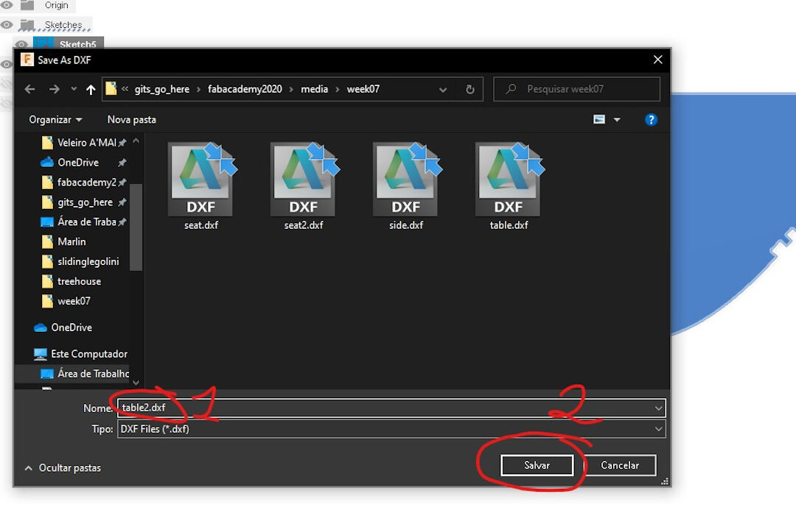
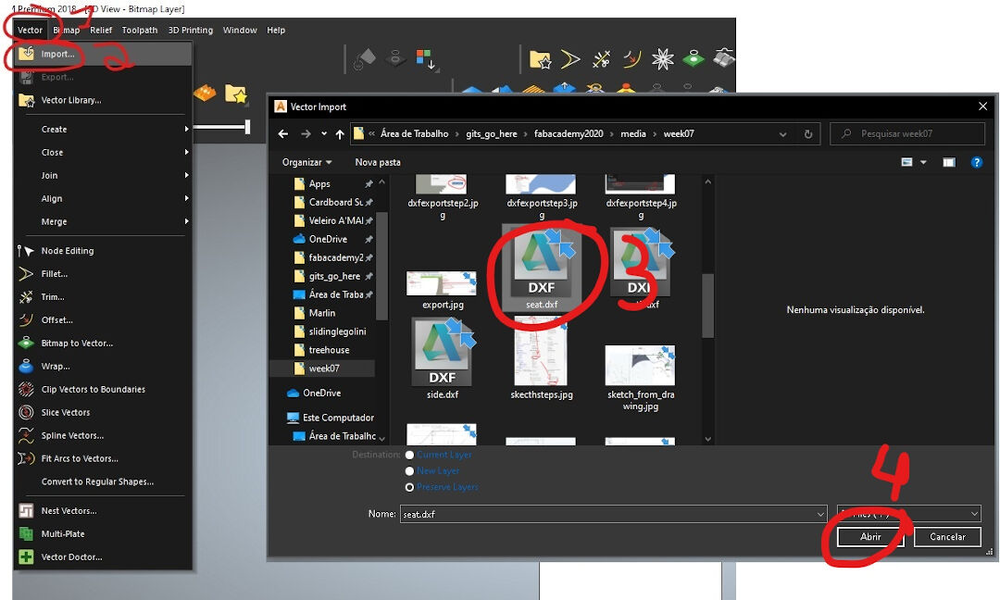
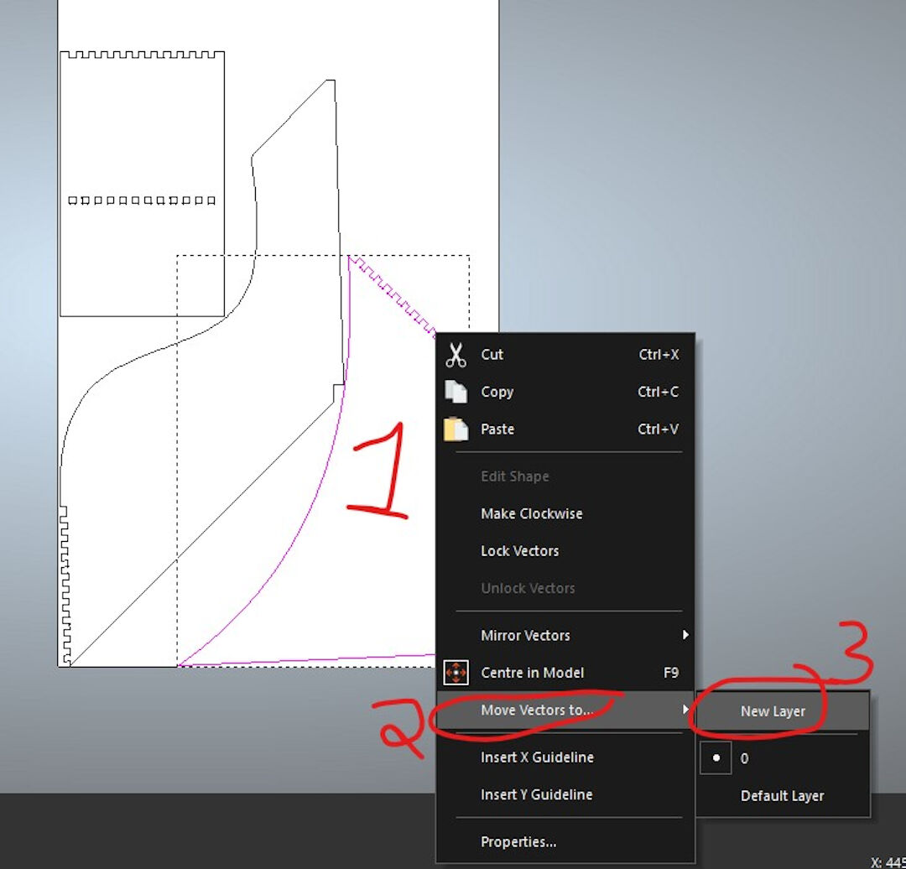
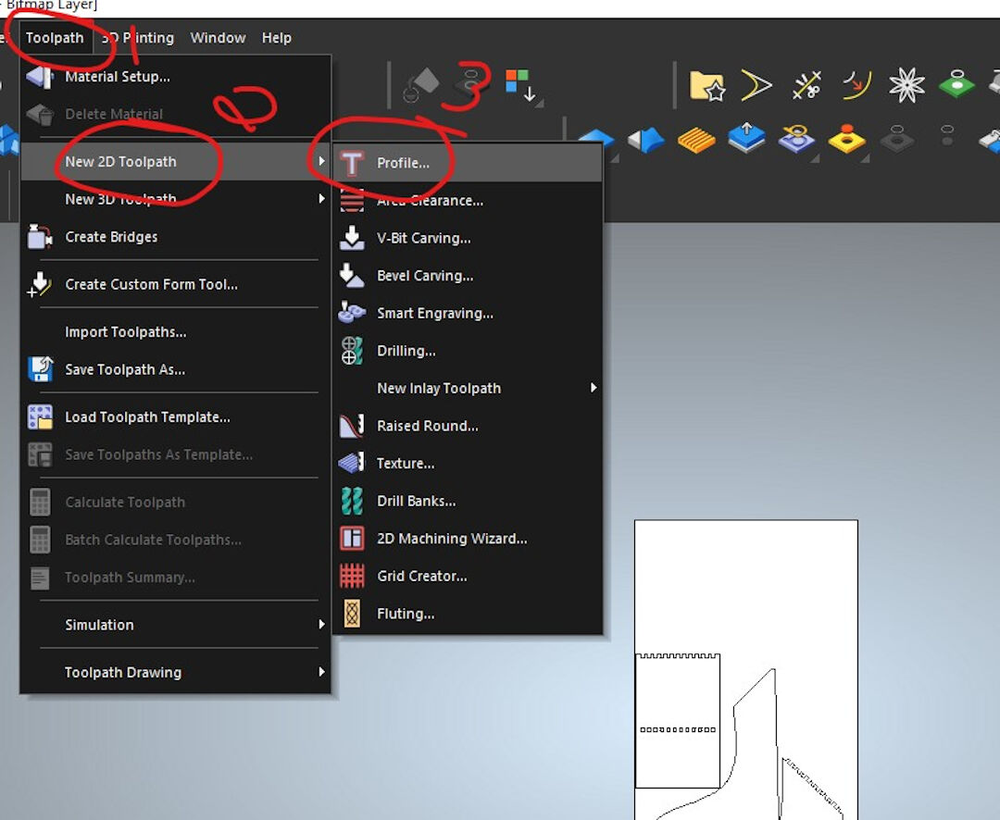
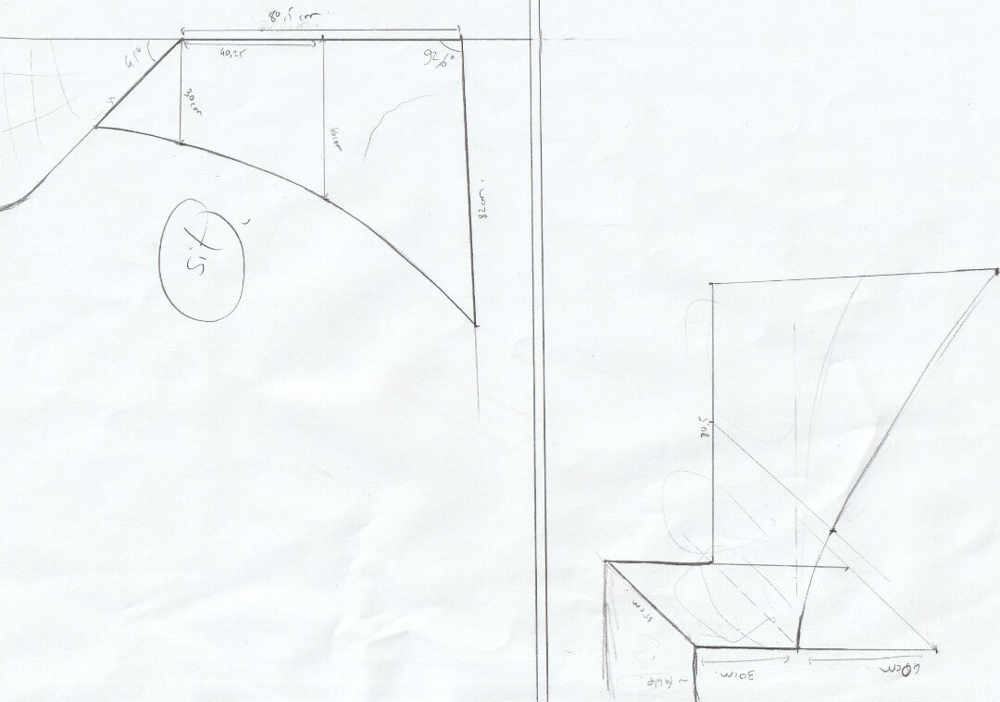
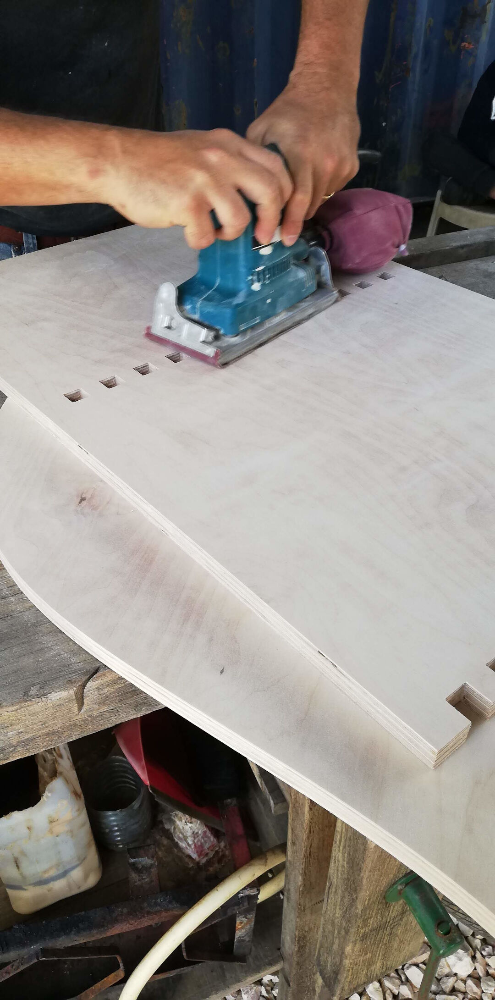
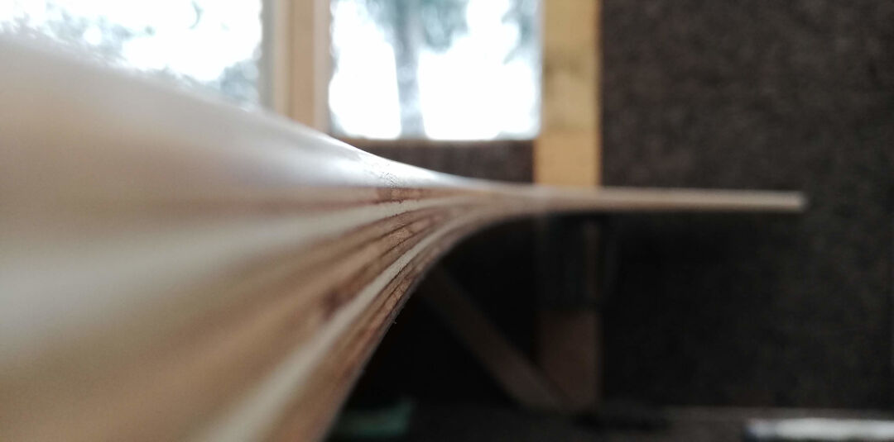

Computer-Controlled Machining
Group Assignment
- Test run-out alignment, speeds, feeds, and tool-paths for your machine
Individual Assignment
- Make something big (on a CNC machine).
Learning Outcomes:
- Demonstrate 2D design development for CNC production
- Describe workflows for CNC production
Have You:
- Explained how you made your files for machining (2D or 3D)
- Shown how you made something BIG (setting up the machine, using fixings, testing joints, adjusting feeds and speeds, depth of cut, etc.)
- Described problems and how you fixed them
- Included your design files and 'hero shot' photos of the final object
Tools Used
- Large (2x3 meters) self-made CNC
Software Used
- SolidWorks
- ArtCAM
- Mach3
- Fusion 360
- Dog-bone Plug-in for Fusion
- Group Assignment:
Test run-out alignment, speeds, feeds, and tool-paths for your machine. Go to group assignment page - Introduction:
I will be designing and cutting a table for the tree-house. I based my work on a sketch of a table done by Anaig, a volunteer in the FabFarm. - Specifications
- Material: Birch plywood
- Mill bit used: 3.175 diamond shape
- In order to manufacture the table, I will first be using multiple CAD and CAM software. I will start designing with SolidWorks, then move to Fusion 360 to create the dog-bones, then with the exported .dxf file, I will move to ArtCAM and create the CAM files. Let's see all these steps below:
- I started by scanning Anaig's sketches.
- In SolidWorks, I started a sketch and then went to Tools >> Sketch Tools >> Sketch Picture.
- Next, I scaled the picture by:
- Clicking on the ruler and dragging it to a known dimension
- Dragging the tip of the ruler to the limit of the known dimension on the picture
- Inserting the dimension of the known dimension of the picture
- Confirming the input.
This procedure ensures the picture is with the correct scale and alignment.
- From there, I extruded and repeated the steps above for each part, then I created an assembly of the table.
- After being satisfied with the design, I proceeded to create dog-bones in Fusion 360. That is done using a plugin called, well, guess what? Dog-bone!
The Add-in Dog-bone can be simply placed on Windows in the folder "~/AppData/Roaming/Autodesk/Autodesk Fusion 360/API/AddIns/" under its own directory, and it will be started at every startup of Fusion.
- To apply the dog-bone in a design made in SolidWorks, I first imported the design to Fusion 360, then copied the solid with Ctrl+C.
- Next, I created a new design:
- By clicking on the plus sign
- Right-clicking the workspace
- Clicking "Paste New"
- That automatically opens a dialog box that I just clicked OK on.
- Last is to use the Dog-bone add-in itself.
- Click the home icon
- Choose the view
- Click on the Dog-bone add-in icon
- Click on the face selector
- Click on the face you want to add dog-bones to
- Fill in the dimension of the dog-bone; in my case, 3.175 mm or 0.125 inches, which is the size of the mill bit I am going to use
- Choose the style of the dog-bone
- Press OK.
- The result is several dog-bones created at once. Very practical.

- I need to export a .dxf in Fusion 360 in order to create a CAM file in ArtCAM.
- Click on the surface
- Click on "Create Sketch"
- Click "Finish Sketch."
-
- Right-click on the sketch
- Click on "Save as DXF"

- Finally, choose a name and save, and I am ready to move to ArtCAM.

- Open Autodesk ArtCAM and then:
- Click "New Model"
- Choose the size of the stock
- Choose the unit
- Click OK
- Next, it's importing the previously created vector:
- Click "Vector"
- Click "Import"
- Choose the file
- Press "Open"

- The previous steps will show a preview of the import; then do:
- Confirm unit
- Choose "Automatically rejoin vectors"
- Press OK
- Do the steps above as many times as needed so you import all the vectors you want to create the CAM for.
- I offset all vectors by 0.1 mm to compensate for the imperfections of my CNC. That allows for higher tolerance.
- Next, I sometimes like to organize the vector, wasting as little stock as possible. That can be automatically done with the nesting tool:
- On the vector menu, click "Nest"; this will open a dialog
- You can inform here the milling tool to be used; in my case, 3.175
- Also, inform the angle increments in which you will allow the software to rotate the parts; in my case, I chose 45 degrees.
- I like to organize the vectors into layers; in this case, I will create an outside layer and an inside layer so when creating the tool-path, this will be easier.
- With the vectors ungrouped, select the vector you want first; in my case, I selected the vector to be cut outside
- Click "Move Vectors To"
- New layer or to a layer previously created.

- Here, I rename the layers to "Outside" and "Inside."
- In the following steps, we are creating the tool-path:
- Click on the "Tool-path" in the menu
- Click "New 2D Tool-path"
- Click "Profile"

- Since we already have separated the vector into different layers, now this will come in handy.
- Select "Inside Operation"
- Select the inside layer
- Select the depth; in my case, the stock is 19 mm
- Under "Profiling Tool," click on "Click to Select"; this will open a dialog where you can choose the milling bit to be used.
- Choose the tool; in my case, I chose a 3.176 diamond mill bit
- Click "Select"
- You can then add the type of ramp to be used; I want to try the smooth one.
- Next step is to finalize the tool-path; scroll down to show more options and:
- Choose material thickness; in my case, 19 mm
- Define the Material Z Zero; I like to define it on the top of the stock
- Confirm the bottom offset, which should be 19 mm
- Click OK
- Do the same procedure over and over for each tool-path
- Now we are saving the tool-path; start by clicking on the blue floppy-disk icon; this will open a dialog.
- You can then view the tool-paths you created earlier:
- Move the tool-paths to the window on the right to include them in one file
- Here you can confirm all files on the right side
- Choose the folder location
- Choose here the post-processor to be used; in my case, I choose the Mach3 post-processor.
- Click on "Save."
- One thing I almost forgot is to create holes in the G-code. I do that by placing these circles around where the tool-path is in various parts of the job in order to later screw and fix the stock on the bed. The advantage is I am sure the tool-path is not going to collide with the fixtures of the stock, in this case, the screws.

- Now let's manufacture it with Mach3 on Windows XP :-) with the CNC I built while in the Fab Academy.
Although it's operational, I decided not to document it as a final project, but that's another story.
- With Mach3 opened:
- Click on "File"
- Then click "Load G-code"
- Choose your G-code file and open it.
- The previous step will load the G-code.
- G-code will be shown on the left window
- Next, I like to click on "Jog Follow"; this will allow you to visualize where your tool is in relation to the G-code. This way, you can safely check and simulate the paths before actually running the code. Use arrows to move within the X and Y axes and PgUp and PgDn to move the Z axis.
- By clicking on "Zero X, Y, and Z" when you are over the place in the stock you want to be 0,0,0, it will set the soft zero to where the tool has been moved.
- I started the job by first securing the stock. For that, I have the CNC make holes around the design with the G-code "holes.tap" contained in this zip file.
- Here, you can see the screwing of the stock. I like to use a Torx screw; they can be reused several times and are always reliable. Thanks to Jarek from FabLab Nomads for the tip.
- After the holes are made and the stock is secure, the internal holes are cut.
- After internal cuts are done, then the external cuts are done. The step-down is 4 mm on all cuts.
- I believe the quality of the cuts is quite good for this birch plywood. The dog-bones are visible, and with little finishing, the parts are going to be ready for assembly.
- Here, you can see the quality control; a team of four, including me, is filing the finger joints so they smoothly attach to one another.
- I use here an orbital sander. I started with sandpaper 100 grit and moved to 220 and then 500. After that, I sprayed some water to lift the fibers and sanded again before applying beeswax mixed with isopropyl alcohol.

- Here, I test the assembly; everything fits. I fit and then remove the pieces by hammering with a white rubber mallet.
- Now, with all pieces sanded and waxed, I fit one to another.
- Here, you can see the tight tolerances of this finger joint. To reduce the gaps even more, I used a mixture of glue and sawdust I generated while sanding the surfaces.
- Detail of the curves.

- Another detail of the filleted sides. The fillet was done manually with a router tool.
- And voilà, the final result!
- With Mach3 opened: